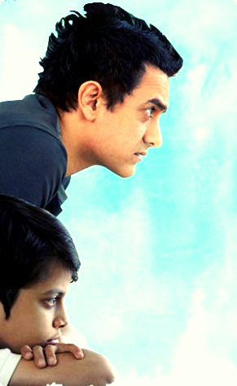

Understanding Disability
A case study of the flim -Taare Zameen Par

“Children with Disability: A Study of Dyslexia in Amir Khan’s Taare Zameen Par (2007)”.
Shodhganga.inflibnet. Accessed 8 August 2020.
Anand, Shilpa. “Historicizing Disability in India: Questions of Subject and Method.”
Disability Studies in India: Global Discourses, Local Realities. Routledge, 2013.
Browm, Lerita Coleman. “Stigma: An Enigma Demystified.”
The Disability Studies
Reader. Routledge, 2013.
Linton, Simi. “What Is Disability Studies?”
PMLA, vol. 120, no. 2, 2005, pp. 518–
522. JSTOR, www.jstor.org/stable/25486177. Accessed 5 August. 2020.
Mahaseth, Harsh. “The Disability Narrative in Indian Cinema."
Film Matters Magazine, 5 April 2019, Accessed on 8 August 2020.
Mitchell, David T., and Sharon L. Synder. “Narrative Prosthesis and the Materiality of
Metaphor.”
Narrative Prosthesis: Disability and the Dependencies of Discourse. University of Michigan Press, 2002.
Pal, Joyojeet. "Physical Disability and Indian Cinema." Different Bodies: Essays on Disability in Film and Television (2013): 109-130.
Home Page